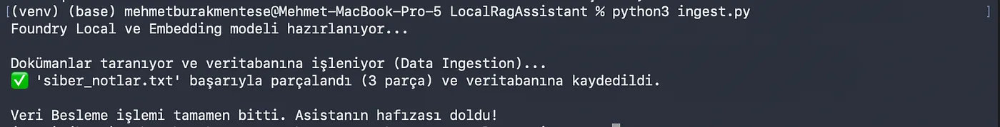
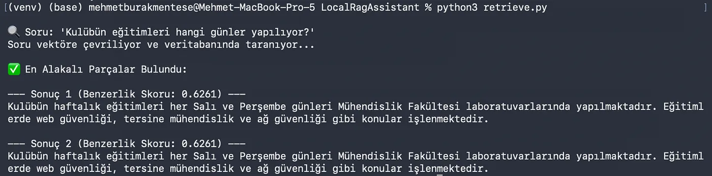
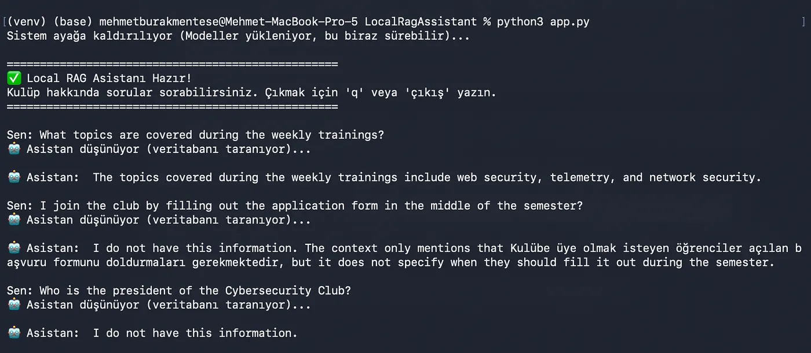

Yazı Hakkında Ön Söz
Tekrardan selam dostum, yazı serimizin ilk bölümünde “Yapay zeka uydurmasın (halüsinasyon görmesin) ve verilerim cihazımdan dışarı çıkmasın” diyerek Local RAG mimarisine sağlam bir giriş yapmıştık.
Cümleleri 1024 boyutlu matematiksel vektörlere (embeddings) çevirmeyi başarmış, bunları saklayacağımız sunucusuz SQLite veritabanımızı kurmuş ve modelimizi İngilizce komutlarla yola getirmiştik.
Bu bölümde ise Phase 2'ye (Proje Geliştirme) geçiyoruz ve motorlara gerçek yakıtı dolduruyoruz: Agent’imize elimizdeki notları okutacak, içinde akıllıca arama yapmasını sağlayacak ve nihayetinde onunla terminal üzerinden canlı canlı sohbet edeceğiz. Hazırsan başlayalım!
Phase 2: Koca Bir Dosyayı Yapay Zekaya Neden Doğrudan Fırlatmıyoruz?
Kodların içine dalmadan önce durup bir düşünelim. Elimizde Siber Güvenlik Kulübü’nün tüm yıllık planlarını, CTF yarışmalarının detaylarını ve toplantı notlarını içeren koca bir metin dosyası var. Aklınıza ilk olarak şu gelebilir: “Eee madem local modelimiz çalışıyor, vereyim metnin tamamını (Prompt olarak), içinden okuyup cevaplasın.”
Ne yazık ki işler öyle yürümüyor. Tıpkı bizim gibi, yapay zeka modellerinin de bir “kısa süreli hafıza” sınırı (buna Context Window diyoruz) vardır. Ona tek seferde koca bir kitabı verirseniz, ya sistem hafıza sınırına takılıp hata verir ya da metnin başını unutup sadece son sayfaları hatırlar. Üstelik her soruda o devasa kitabı baştan aşağı okutmak cihazınızı (özellikle offline ortamda CPU/NPU kullanıyorken) inanılmaz yorar ve cevap süresini dakikalara çıkarır. Fakat bizim o kadar süremiz yok!
İşte tam bu noktada çok daha zekice bir sisteme ihtiyacımız var: Dosyaları öyle bir işlemeliyiz ki, ben “Kulübün eğitimleri ne zaman?” diye sorduğumda sistem koca dosyayı okumakla vakit kaybetmesin; gidip sadece eğitim saatlerinin yazdığı o minik paragrafı bulsun ve sadece o parçayı modele kopyalama kağıdı olarak cevaplasın.
Bu durum kulağa daha hoş geliyor değil mi? Gelin öyleyse bu hoş durumu nasıl kodladığımıza adım adım bakalım!
Adım 1: Chunking (Veriyi Küçülterek Verme)
Yapay zekanın bilgiyi sindirebilmesi için onu anlamlı ve küçük parçalara (chunk) bölmemiz gerekir.
Bu işlemi otomatikleştirmek için projemizde docs adında bir klasör oluşturduk ve içine uzunca bir "Siber Güvenlik Kulübü Notları" metni koyduk. Ardından yazdığımız ingest.py kodu ile bu metni boşluk satırlarına göre paragraflara ayırdık.
Kodumuz, her bir paragrafı Foundry Local’in qwen3-embedding-0.6b modeline gönderip vektörlere çevirdi ve ilk bölümde kurduğumuz SQLite veritabanına yığınla (batch) kaydetti. Asistanımızın hafızasını tek bir komutla, doğru porsiyonlarla doldurduk!
# ingest.py dosyamızın parçalama (chunk) fonksiyonu / Chunking function of our ingest.py file
def chunk_text(text):
# Metni çift satır boşluklarına göre böler / Splits the text by double newlines
paragraphs = text.split('\n\n')
# Çok kısa olan veya boş kalan parçaları filtreler / Filters out empty or very short parts
chunks = [p.strip() for p in paragraphs if len(p.strip()) > 10]
return chunksTerminalden örnek çalıştırma ve çıktı görseli:

Adım 2: Kosinüs Benzerliği ve Arama Motoru Yapmak (Retrieval)
Verileri küçük parçalar halinde kaydettik ama ben asistana “Eğitimler nerede yapılıyor?” diye sorduğumda, sistem o veritabanından doğru paragrafı nasıl bulacak?
İşte burada harika bir geometri devreye giriyor: Kosinüs Benzerliği (Cosine Similarity).
Sistem benim sorduğum soruyu da 1024 boyutlu bir vektöre çeviriyor. Sonra bu vektör ile veritabanındaki her bir paragrafın vektörü arasındaki açıyı ölçüyor. Matematiksel olarak birbirine en çok benzeyen (açısı en dar, skoru 1'e en yakın olan) parçayı çekip alıyor.
Yazdığımız retrieve.py koduyla bunu test ettiğimizde, sistemin "Salı ve Perşembe günleri Mühendislik Fakültesi laboratuvarlarında yapılmaktadır" cümlesini saniyeler içinde 0.6261 gibi yüksek bir skorla en tepeye çıkardığını gördük.
Terminalden örnek çalıştırma ve çıktı görseli:

Adım 3: Tüm Adımları Birleştirme ve Agent’imiz ile Sohbet
Elimizde harika çalışan iki ayrı modül var:
- Sorumuza en uygun metin parçasını saniyeler içinde bulan arama motorumuz (
qwen3). - Sadece verdiğimiz o minik metne bakarak cevap üreten sohbet modelimiz (
phi-3.5-mini).
Son adımda app.py dosyasını oluşturarak bu iki sistemi tek bir terminal arayüzünde (CLI) birleştirdik. Sürekli çalışan bir döngü kurduk. Mantık kusursuz işliyor: Ben soruyu soruyorum, arama motoru koca dosyayı değil sadece en alakalı not parçasını buluyor, bu notu İngilizce system prompt’umuzun içine yerleştirip sohbet modeline veriyor. Model de halüsinasyon görmeden, sadece benim verdiğim nota bakarak bana Türkçe ve net bir cevap üretiyor.
Terminalden örnek çalıştırma ve çıktı görseli:

İkinci Phase’in Sonu ve Sırada Ne Var?
Gördüğünüz gibi, hiçbir bulut servisine veri göndermeden, tamamen cihazımızın kaynaklarıyla kendi kişisel notlarımızı okuyan ve sorularımıza mantıklı cevaplar veren bir Offline AI Agent geliştirmeyi başardık! Üstelik bu “parçalama ve bulma” taktiği sayesinde sistemi inanılmaz hızlı ve kararlı hale getirdik.
Serinin 3. ve son bölümünde (Phase 3), asistanımızı acımasızca test edecek, onu köşeye sıkıştırmaya çalışacak ve projemizin belgelendirmesini yaparak bu 6 haftalık serüveni noktalayacağız.